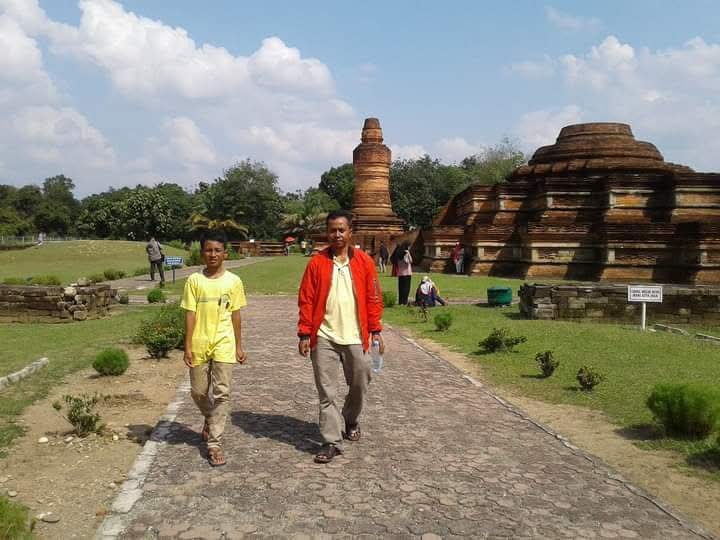
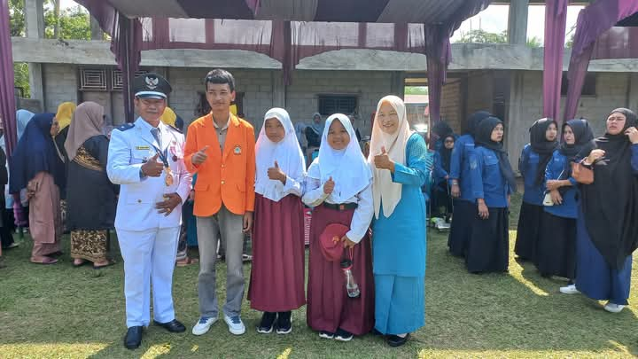
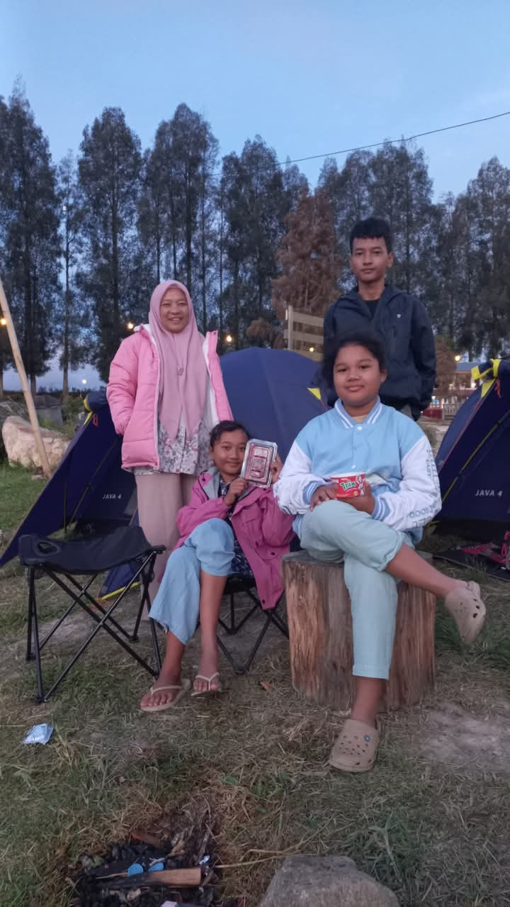
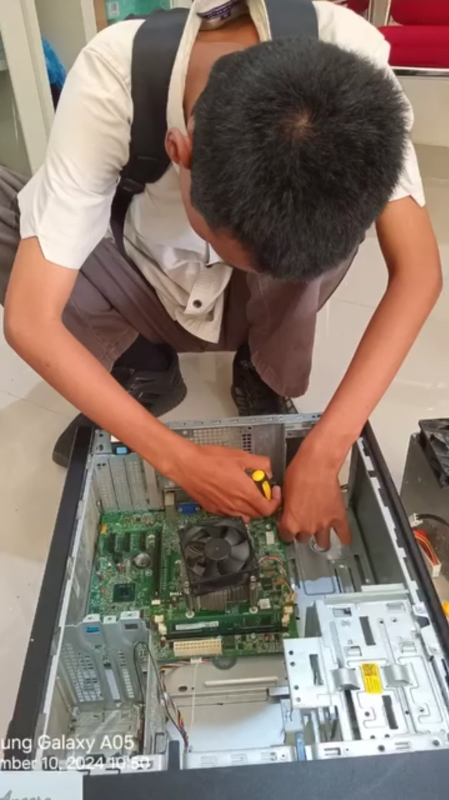
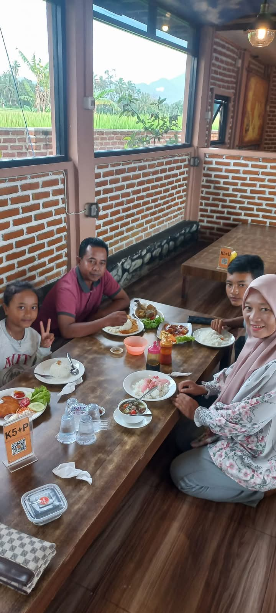
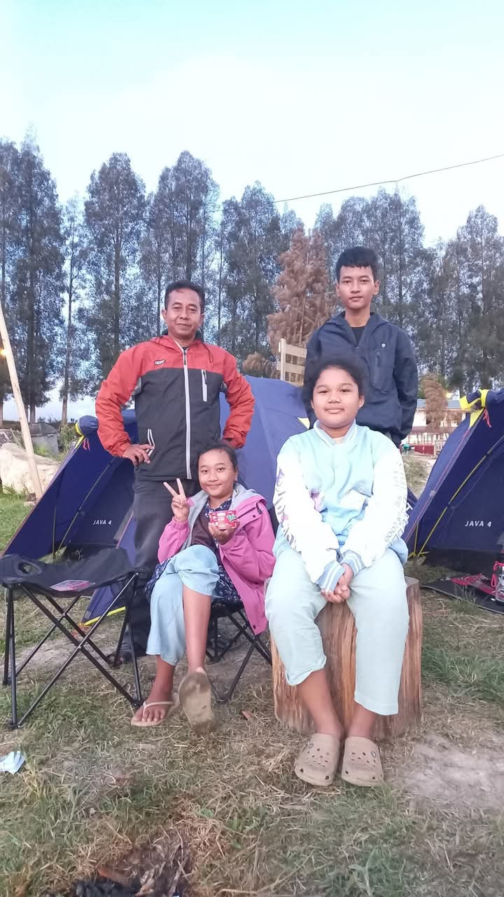

Berfokus pada Web & Mobile Development serta Cloud Computing. Siap berkontribusi secara nyata dalam pengembangan perangkat lunak industri.
Informasi identitas diri dan rekam jejak akademik mahasiswa.
Saya adalah mahasiswa aktif program studi D3 Sistem Informasi di Politeknik Negeri Padang dengan IPK kumulatif konsisten di angka 3.80 / 4.00. Memiliki minat mendalam pada pengembangan web & mobile, cloud computing, serta sistem basis data.
Jenjang pendidikan formal dari masa kanak-kanak hingga perguruan tinggi serta sertifikasi teknis profesional.
Riwayat Sekolah & Kuliah
Politeknik Negeri Padang
Pendidikan Menengah Atas
Pendidikan Menengah Pertama
Pendidikan Dasar
Pendidikan Anak Usia Dini
Pendidikan Usia Dini
Sertifikasi Industri & Cloud
Passing Score: 930 / 1000
Final Score: 96.78%
Final Score: 92.46% (Issued: May 2026)[cite: 6]
Bahasa pemrograman, framework, dan perangkat teknologi yang dikuasai.
Pengembangan backend web dinamis dan pemrosesan form.
Membangun aplikasi web terstruktur dengan arsitektur MVC.
Pembuatan aplikasi mobile lintas platform (Android/iOS).
Perancangan infrastruktur cloud, EC2, VPC, S3, dan RDS.
Perancangan skema database, relasi tabel, dan manipulasi data SQL.
Kontrol versi kode kolaboratif dan pengelolaan lingkungan server lokal.
Aplikasi web dan mobile yang telah saya kembangkan.
Aplikasi berbasis web menggunakan Laravel dengan fitur pencarian film terintegrasi OMDB API (EN/ID).
Pengembangan aplikasi mobile lintas platform menggunakan Flutter & Dart, integrasi REST API, dan basis data.
Proyek aplikasi web berbasis HTML5 yang dikembangkan untuk memenuhi tugas akhir semester akademis.
Dokumentasi perjalanan akademis, kegiatan keorganisasian, dan momen berharga.

Momen kegiatan dan aktivitas berharga.

Momen kegiatan dan aktivitas berharga.

Momen kegiatan dan aktivitas berharga.

Momen kegiatan dan aktivitas berharga.

Momen kegiatan dan aktivitas berharga.
Momen kegiatan dan aktivitas berharga.

Momen kegiatan dan aktivitas berharga.